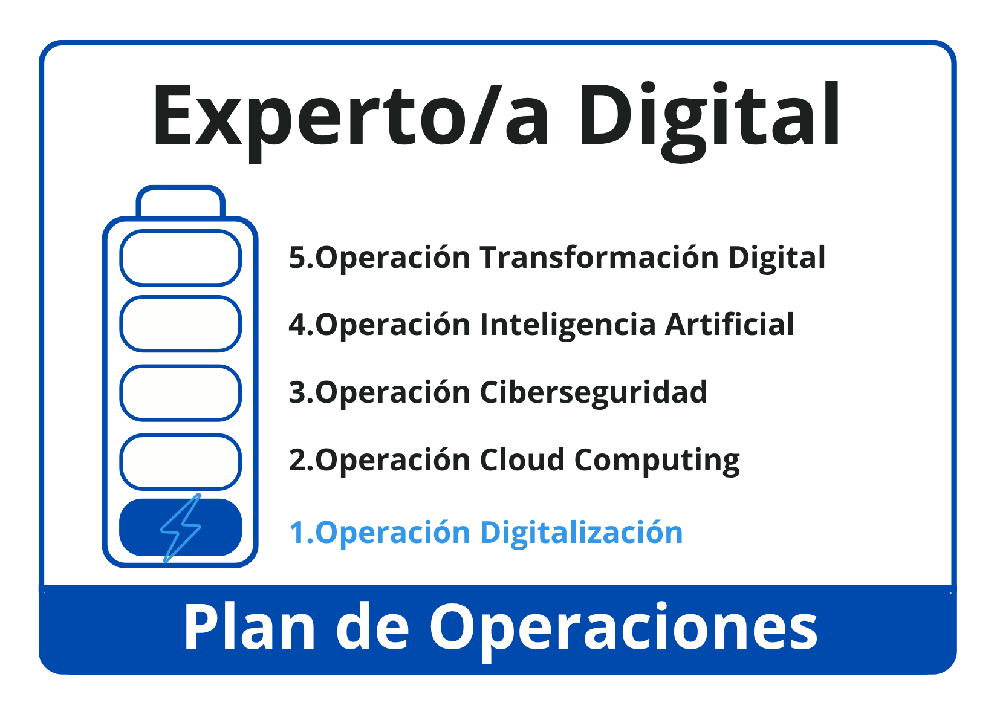

En aquesta primera operació del mòdul Digitalització aplicada als sectors productius treballarem conceptes relacionats amb els processos de transformació digital de les empreses i dels sectors productius.
- En primer lloc, definirem què és la digitalització, analitzarem com pot transformar diferents àmbits d'una empresa i diferenciarem els entorns IT (tecnologies de la informació) i OT (tecnologies d'operació).
- En segon lloc, coneixerem les principals tecnologies habilitadores digitals (THD) i analitzarem com contribueixen a transformar processos, productes i serveis.
- Finalment, ens centrarem en Internet de les coses (IoT) com un exemple especialment rellevant de connexió entre dispositius, dades, comunicacions i processos empresarials.
Al llarg de l'operació realitzarem diferents activitats d'anàlisi i acabarem amb el repte Experts en THD: casos d'ús, en què analitzarem exemples reals d'aplicació de tecnologies habilitadores digitals en empreses i sectors productius.
Un cop superada l'operació, obtindrem la primera insígnia de la nostra credencial i podrem continuar avançant en l'itinerari de digitalització.

És important que les activitats i evidències d'aprenentatge d'aquesta operació quedin correctament registrades a la nostra carpeta d'aprenentatge (LOG). El LOG ens servirà per documentar el treball realitzat, seguir el nostre progrés, identificar les tasques completades i pendents i, sobretot, reflexionar sobre què hem après i com ha evolucionat el nostre aprenentatge.